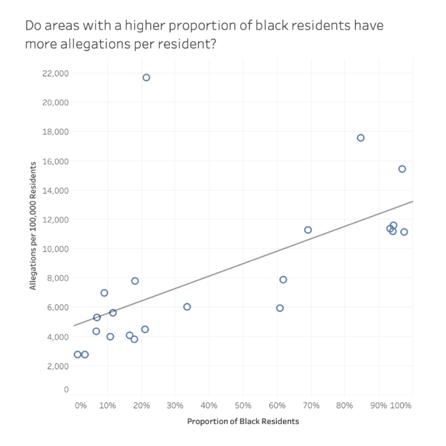
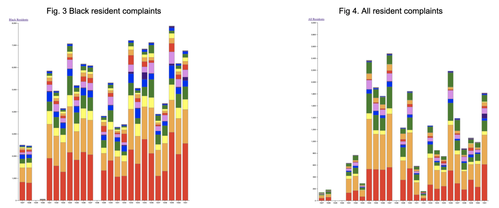

Chicago Police Misconduct Data Analysis
The goal of this project was to analyze the relationship between the demographics of a neighborhood and the number of police complaints within the Chicago police department. We used the Chicago police department's database of police complaints to analyze the data. Because the information was not well kept, before we began, we had to do significant data cleaning. A full analysis of our findings can be found here.
Findings

